← Back to supported mods
Parts
Amethyst Infrared Camera

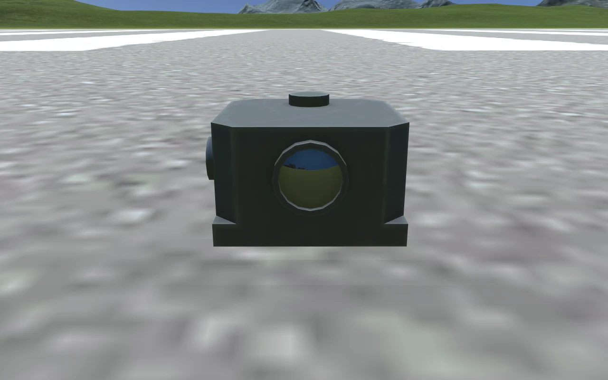
Amethyst Solar Wing
Amethyst Visible Light Camera
Beryl 62-A "Skitrener " Control Block
Beryl Solar Wing

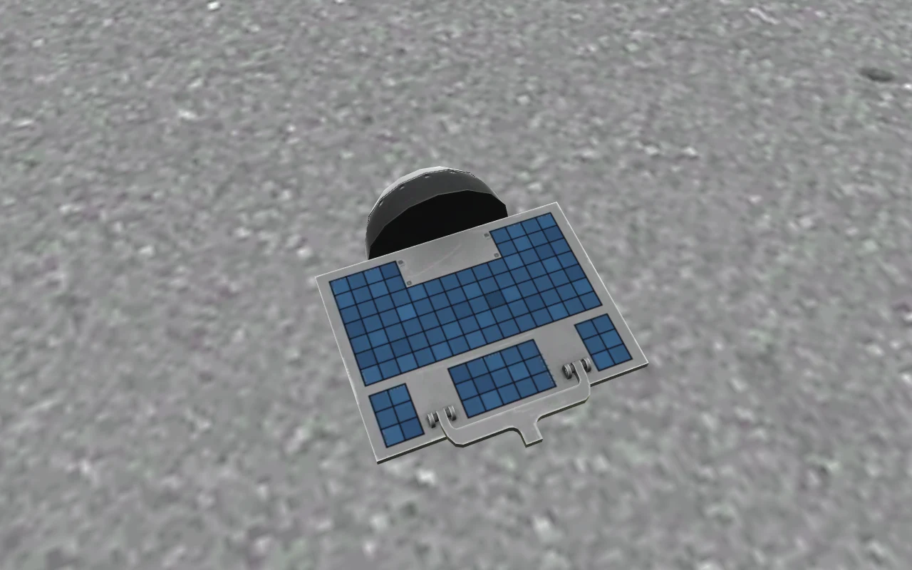
Emerald Laser Reflector

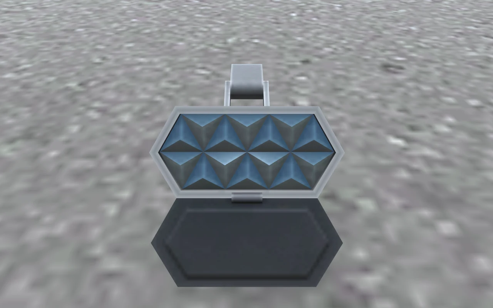
Emerald Size 1 Solar Panel
Emerald Visible Light Camera A
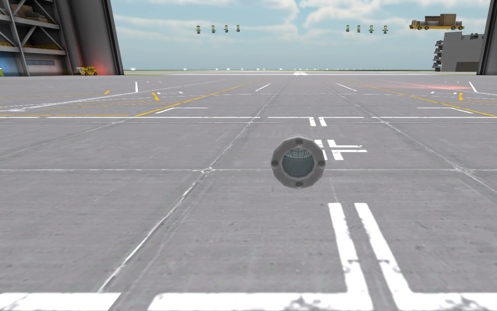
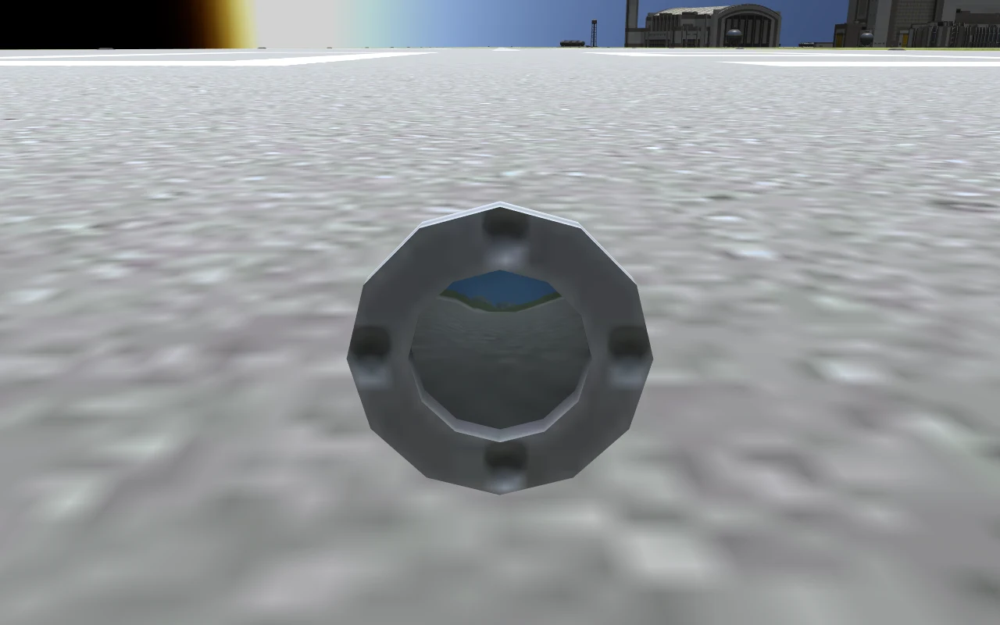
Emerald Visible Light Camera B

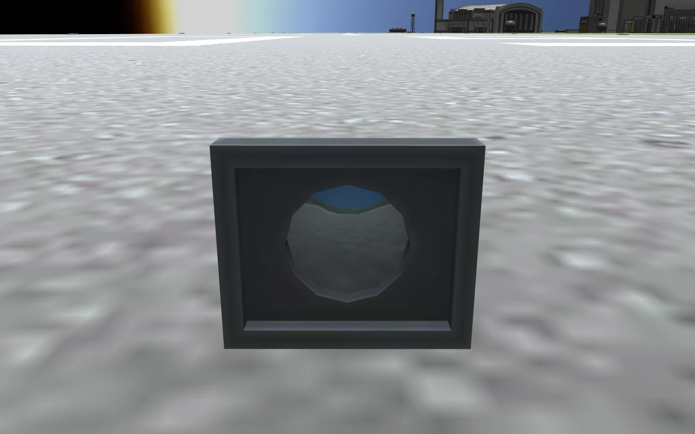
Garnet Visible Light Camera
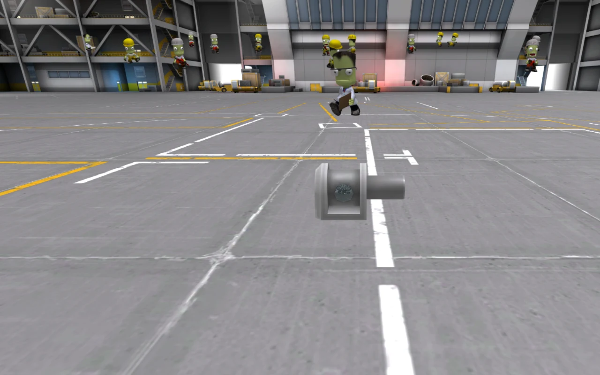
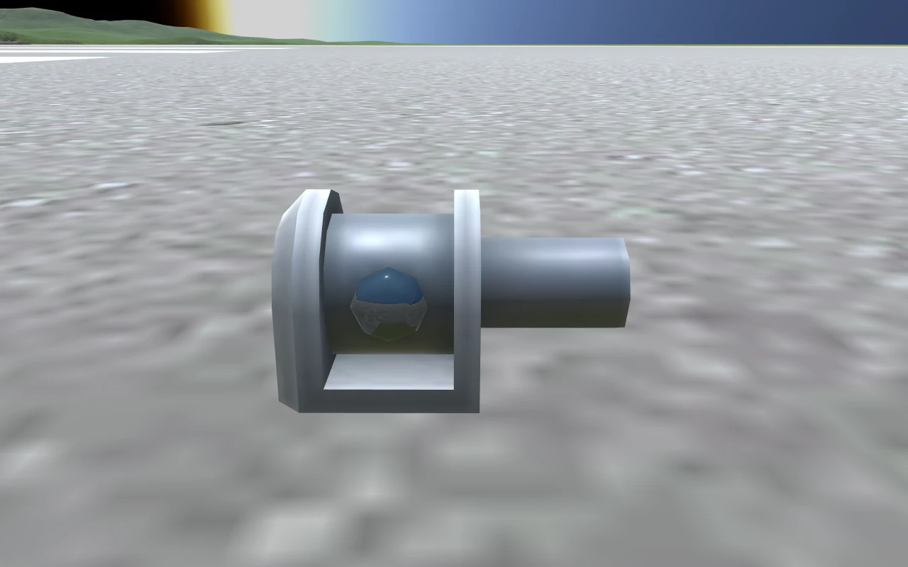
Opal Solar Wing
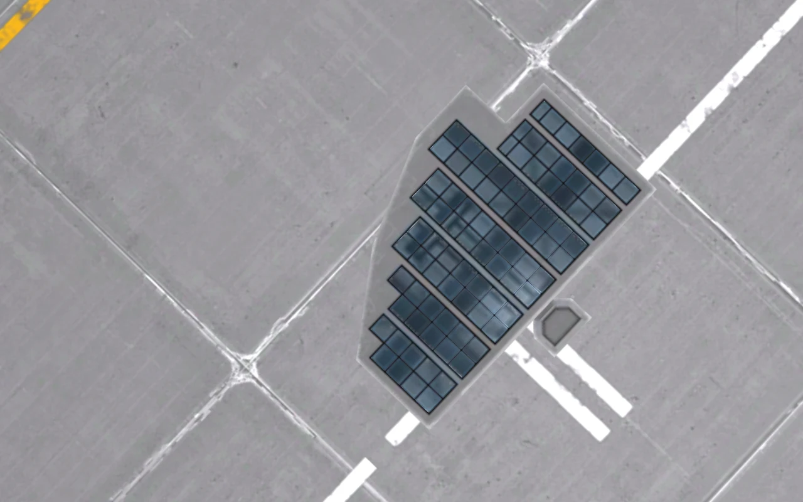
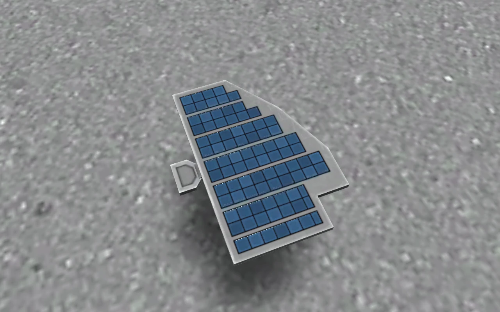
Opal Ultraviolet Light Camera

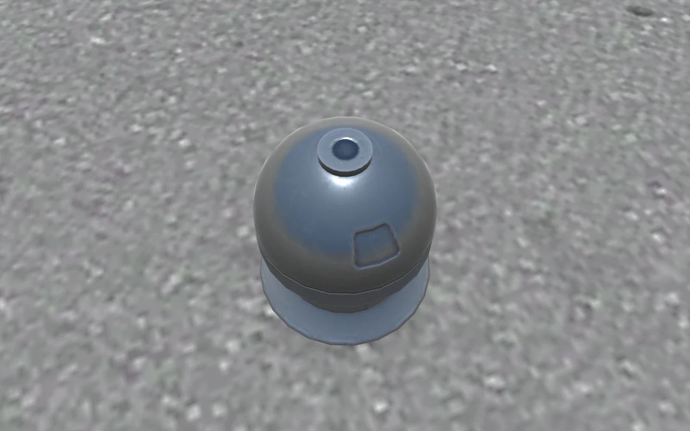
Opal Visible Light Camera
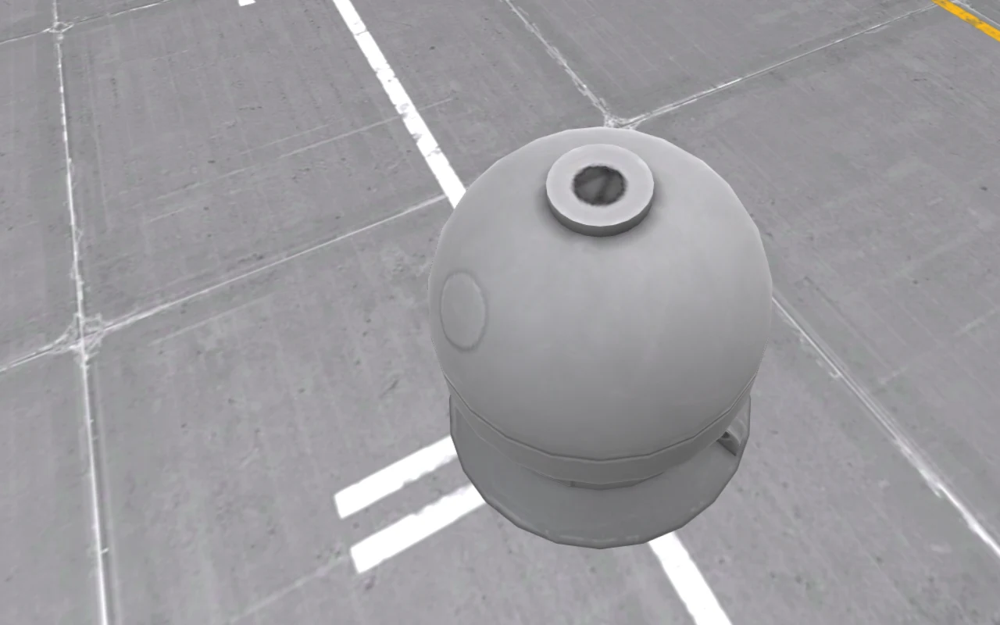

Pear Solar Wing
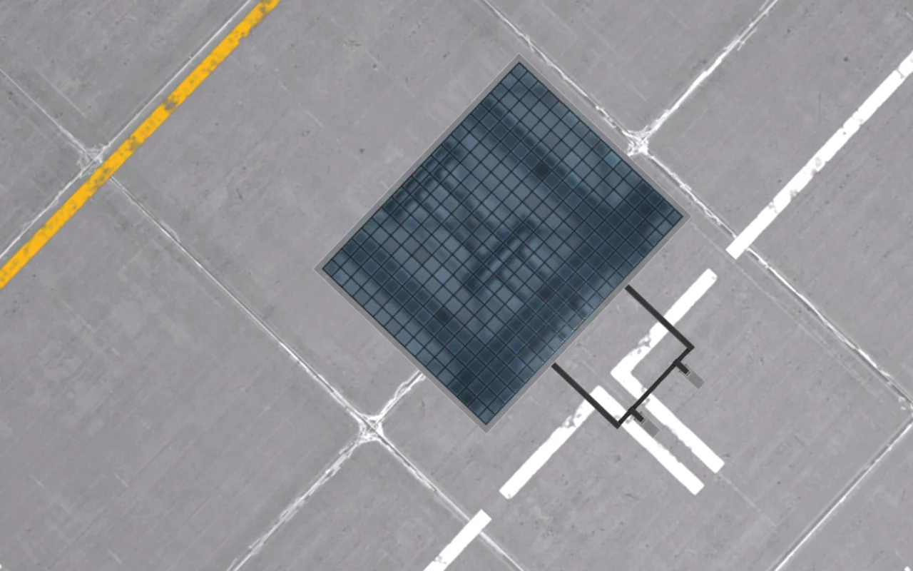

Pearl Visible Light Camera
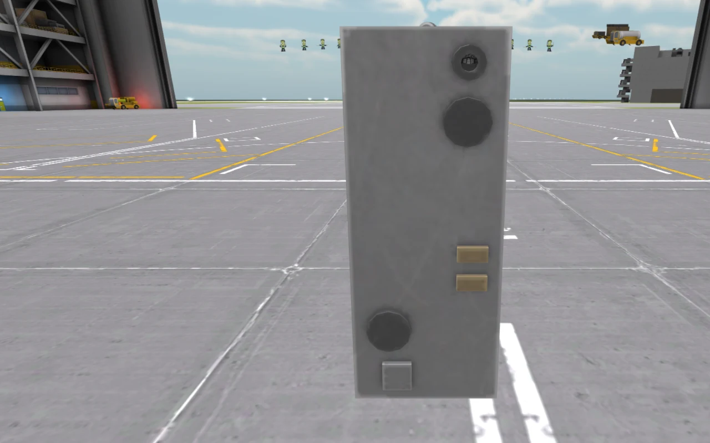

Quartz 62-B "Skjultskatt" Control Block
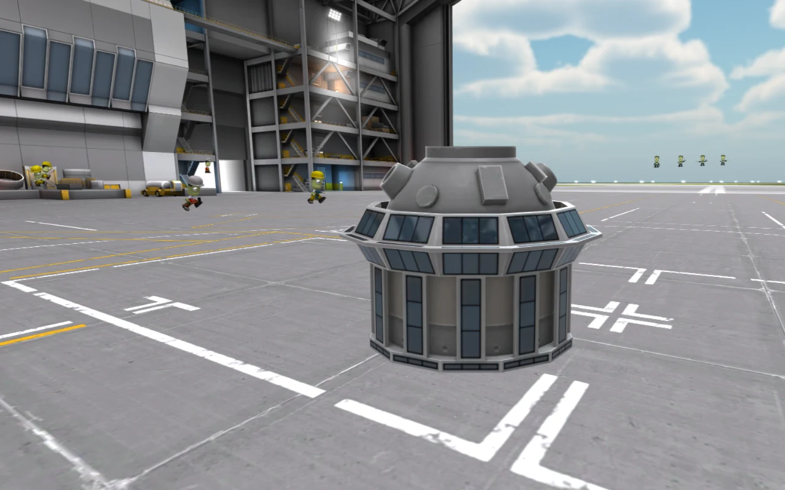